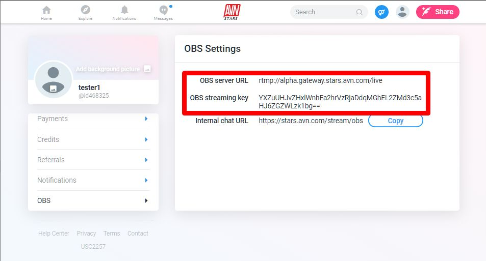
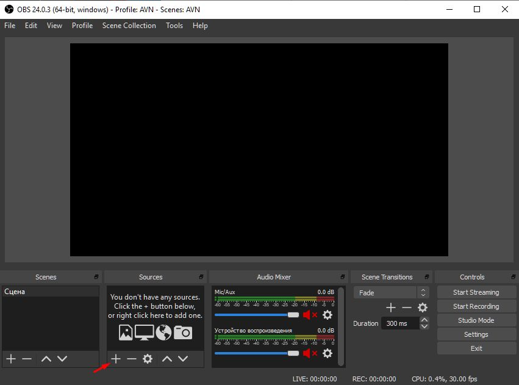
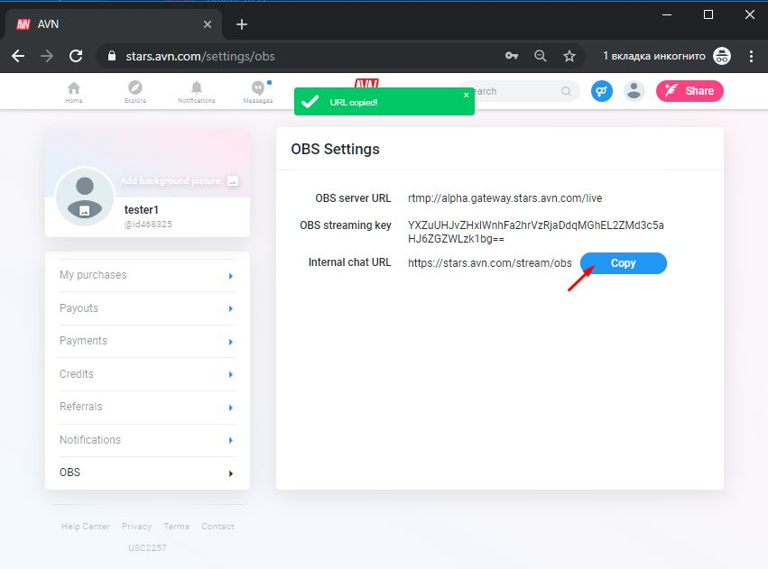

Starting Stream on Mac
Open Settings/OBS section on site. Copy OBS server URL and OBS streaming key to OBS Studio Settings
Paste it into OBS Settings/Stream section

Add sources & start stream
For streaming from your webcam use Video Capture Device source

Open OBS chat window in your browser for manage viewers
